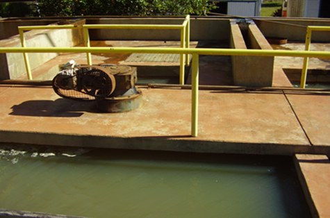
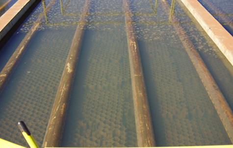
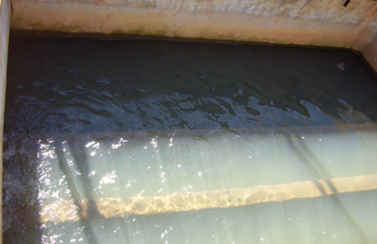

Potabilizacion
Procesos necesarios
Coagulación y Floculación
Una vez ingresada el agua desde su fuente, en este caso un arroyo, se inicia el proceso de potabilización con la adición de sulfato de aluminio a la entrada de la planta potabilizadora. Esto produce la coagulación que permitela agrupación del material suspendido formando grumos (flocks). Con una agitación suave en esta cámara conocida como "floculador" se consigue el contacto entre los grumos que se formaron, permitiendo su aumento de tamaño y peso que hará mas sencilla su separación en el paso siguiente
Decantacion
La separación de las particulas llamadas flocks es el paso siguiente. Esto se realiza en una pileta con un movimiento ascendente y en dirección longitudinal que da tiempo a la decantación, o sea el depósito de los floks en superficies ampliadas por módulos tipo panal de abeja y en el fondo
Filtracion
Las particulas que no decantaron, es decir no terminaron en el fondo del decantador por su pequeño tamaño y bajo peso, quedan retenidas en un filtro de arena